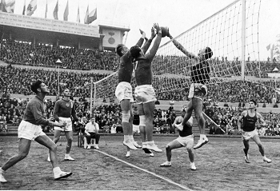

Volleyball is a sport that used to be called mintonette. Volleyball originated in the United States in 1895 as a blend of basketball, baseball, tennis, and handball.
In 1895, William G. Morgan, an instructor at the Young Mens Christian Association (YMCA) in Holyoke, Mass., decided to blend elements of basketball, baseball, tennis, and handball to create a game for his classes of businessmen which would demand less physical contact than basketball. He created the game of Volleyball(at that time called mintonette)
Volleyball is played by both males and females of all ages!
The net, originally a standard tennis net, stood at 6'6'' and an unlimited number of players could be on each side of the court at any given time. Similar to baseball, a match was made up of nine innings, with each team serving three times in an inning with unlimited contacts. Indoor volleyball was added to the Olympics in 1964.
| Mens Volleyball | Year |
|---|---|
|  | The picture to the left is a picture of Volleyball Circa 1952
Volleyball first appeared at the Olympics at the 1924 games in Paris. It was a demonstration game, though, and was not officially added to the Olympic game roster until 1957. |
Source: flo.volleyball.tv.
Image credit: Fox Photos-Hulton Archive-Getty Images.
Volleyball is the second most popular sport in the world only to soccer!
FUN FACT: I've played Volleyball my entire life!